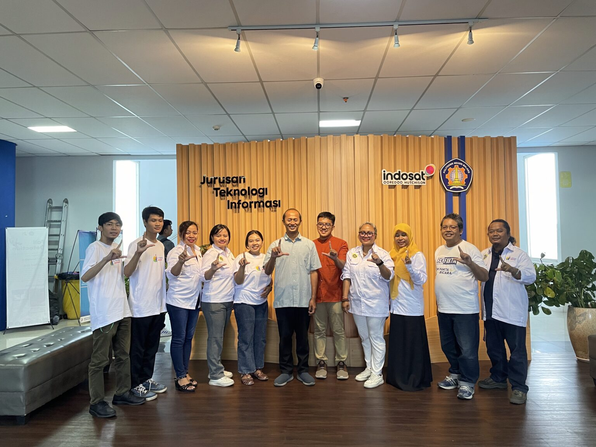
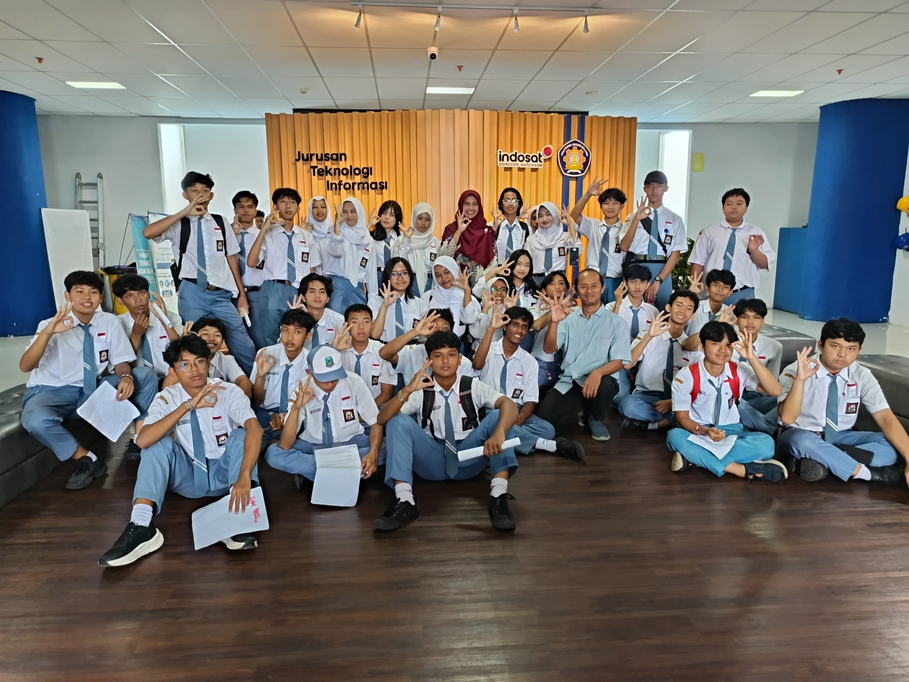
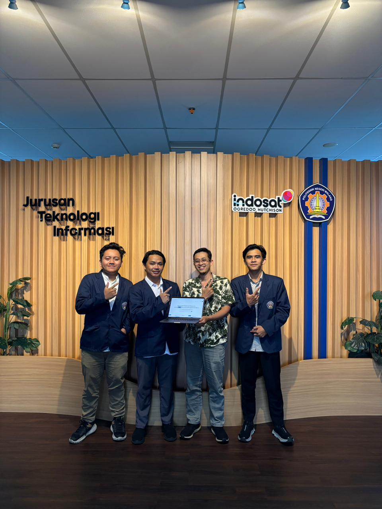
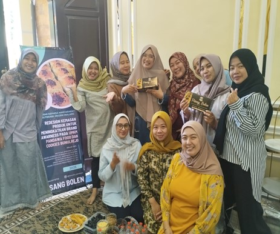

Berita dan Pengumuman - Laboratorium IVIS

Jurusan Teknologi Informasi Politeknik Negeri Malang melaksanakan kegiatan dengan tema “AI Ready ASEAN untuk Siswa”
Jurusan Teknologi Informasi Politeknik Negeri Malang melaksanakan kegiatan “AI Ready ASEAN untuk Siswa” pada Selasa, 11 November 2025, bertempat di Ruang LSI Lantai 6.
Baca Selengkapnya →
Jurusan Teknologi Informasi Politeknik Negeri Malang Menerima Kunjungan dari SMA Negeri 3 Kota Malang
Jurusan Teknologi Informasi Politeknik Negeri Malang menerima kunjungan dari SMA Negeri 3 Kota Malang dalam kegiatan Mini Outdoor Learning to Politeknik Negeri Malang yang berlangsung penuh semangat dan antusiasme.
Baca Selengkapnya →
Mahasiswa Jurusan Teknologi Informasi Politeknik Negeri Malang Raih Juara 3 Hackathon – IT Fest 2025 yang diselenggarakan oleh Himpunan Jurusan Teknologi Informasi Politeknik Negeri Samarinda
Tim Program Kegiatan Kepada Masyarakat (PKM) Politeknik Negeri Malang melaksanakan kegiatan pengabdian kepada masyarakat bertajuk “Redesign Kemasan Produk untuk Meningkatkan Brand Awareness pada UMKM Pandawa Food dan Cookies Bunulrejo.”
Baca Selengkapnya →
Politeknik Negeri Malang Dampingi UMKM Pandawa Food dan Cookies Bunulrejo Tingkatkan Brand Awareness Melalui Redesign Kemasan Produk
Lab IVSS memulai proyek kerja sama dengan Dinas Pertanian untuk mengembangkan sistem visual berbasis AI untuk pertanian presisi...
Baca Selengkapnya →